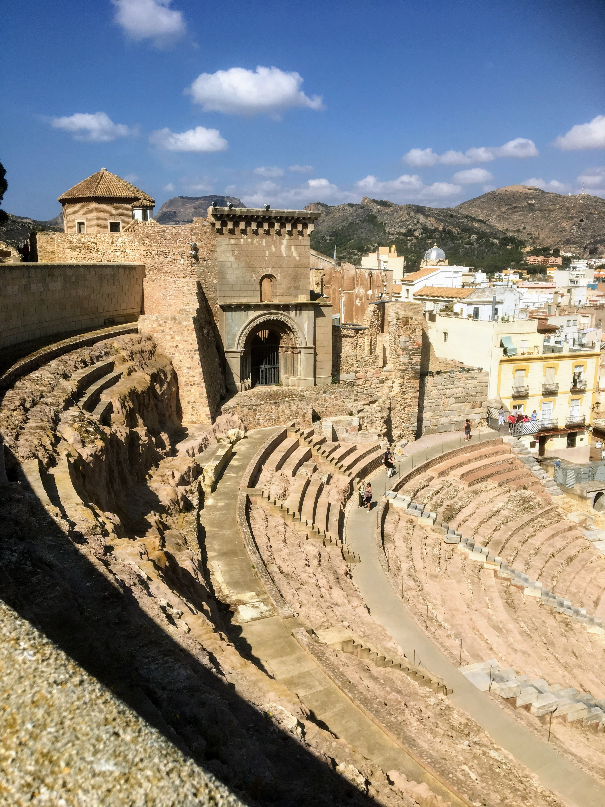

Britannia Cruise 2018
Monday May 7th 2018

Our latest port of call was Cartagena, on mainland Spain, which has been inhabited for over two millennia,
being founded around 227 BC by the Carthaginian Hasdrubal the Fair as Qart Hadasht (Phoenician, meaning 'New Town'), the same name as the
original city of Carthage. The city had its heyday during the Roman Empire. During the Spanish Civil War, Cartagena was the main base of
the Spanish Republican Navy, and one of the primary strongholds of the Republican Government. It held out against the forces of General
Francisco Franco longer than any other city in Spain, being the last of its cities to surrender.
We tied up at the port/marina, which is within easy walking distance of the town.
Again, Mum declined to leave the ship, so I was free to explore on my own. I walked out of the Marina and along the promenade until I reached
the Plaza de los Héroes de Cavite and the
Monument to the Heroes of Cavite and Santiago de Cuba, which commemorates the role of the naval squadrons during the 1898 Spanish–American
War.
Heading inland, I reached the Plaza del Ayuntamiento, on one side of which is the Palacio Consistorial de Cartagena, also known as the
Cartagena City Hall. It's a triangular-shaped building with a façade made entirely of white marble which was built at the start of the 20th
Century, when the city was booming. Due to its construction on unstable land reclaimed from the sea, and a deficient foundation system, the
building began to suffer significant structural damage. In 1995 the building was closed and restoration works undertaken. Legal problems
delayed the works for eleven years, which weren't completed until 2006.
Next stop, a climb up to the Teatro Romano. The theatre was built between 5 and 1 BC. During the 13th century the Old Cathedral of the city
was built over the upper seating area. In 1988 the first remains of the theatre were discovered during the construction of the Centro
regional de artesanía. The archaeological excavations and the restorations were
completed in 2003.
From there I wandered up to the ruined Castillo de la Concepción, taking the long way round with views over the Marina, rather than paying to
use the panoramic elevator. The stairs back to the city centre takes you past the
Catedral de Santa María La Mayor.
We left in the early afternoon, passing what looked like a stealth Naval ship,
and out of the harbour past the Navidad lighthouse.